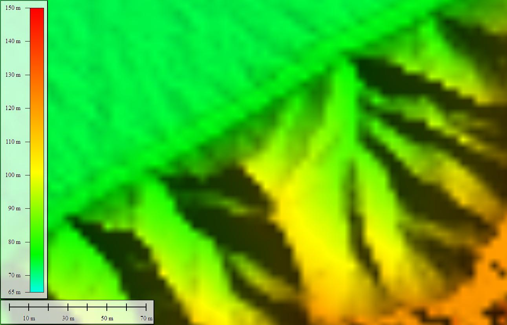
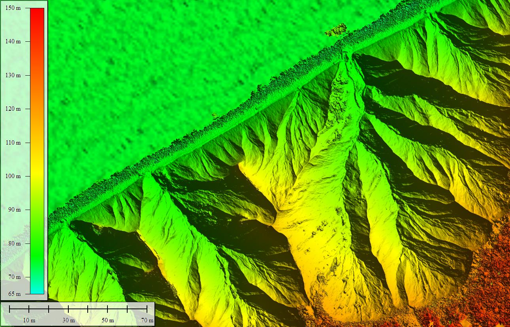

Chimney Bluffs State Park, New York, July 14, 2017
These overlaid images are airborne LiDAR data collected in 2011 and a digital elevation model made from photos taken from an unmanned aerial system (drone) flown on July 14, 2017.
The 2017 data were collected by the U.S. Geological Survey with support from FEMA and the New York State Departments of State and Conservation.
Grab and drag the green handle to compare images.

